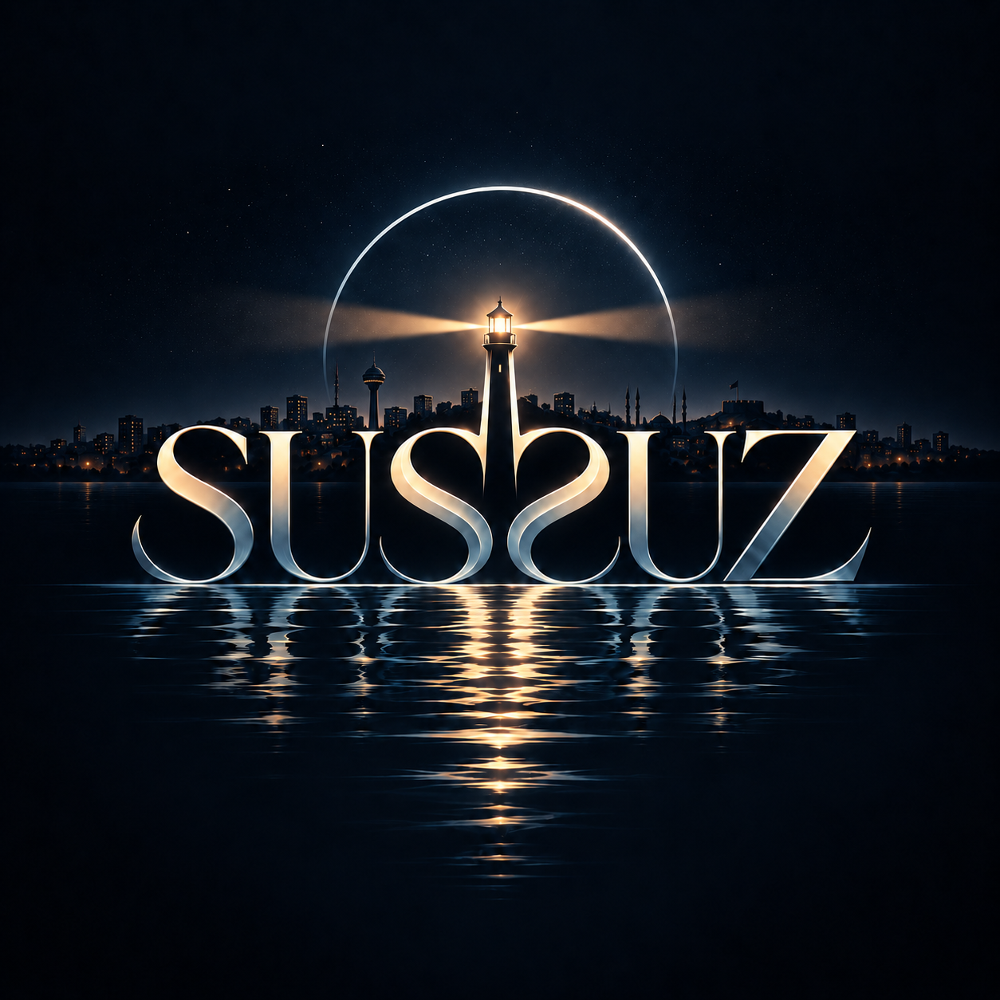

“Bazı şeyler gömülünce kaybolmaz.”
BİR ANKARA HİKÂYESİ
7 Kanonik Parça // SUSSUZ Soundtrack
“Bu insanların ilişkileri sadece yetişkinlerin meselesi değil. Bir aile var. Başka aileler de var. Aile yılı diye bizi katledenlere karşı: Biz zaten bir aileyiz. Her aile sizin tarif ettiğiniz şekilde olmak zorunda değil.”
İsim yok. Hesap yok. Sadece gecenin içine fısıldadığın cümle.
Konuşma metni...
İKİ EKSENLİ ŞEFFAF ÜRETİM VE KATKI SİSTEMİ